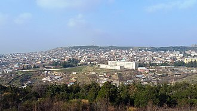

მე ვარ თაზო გოგიშვილი ვსწავლობ გოაში უკვე 2-თვე
დაბადებული - 2007,05,25
საცხოვრებელი — ლოტკინი ჟღენტის ქუჩა 140N
ძველი უბანი თბილისში, ქალაქის ჩრდილოეთ მხარეს, ახლანდელი „თბილისის ზღვის“ ახლოს. 1848 წელს შედგენილ თბილისის მიდამოების გეგმაზე აღნიშნულია „ლოტკინის თავის გორა“ და „ლოტკინის მთა“. სახელწოდება „ლოტკინი“, ისევე როგორც „ლოტიკი“, დაუდგენელი ქართული სიტყვის რუსული ტრანსკრიპციითაა ნაწარმოები. ლოტკინის გორას ადრევე იყენებდნენ საძოვრებად, აქ ცხვარი მოჰყავდათ გარეკახეთიდან და ქვემო ქართლიდან — გომარეთიდან; პირველი მოსახლენიც აქ სოფ. გომარეთიდან მივიდნენ XX საუკუნის 20-იან წლებში.
